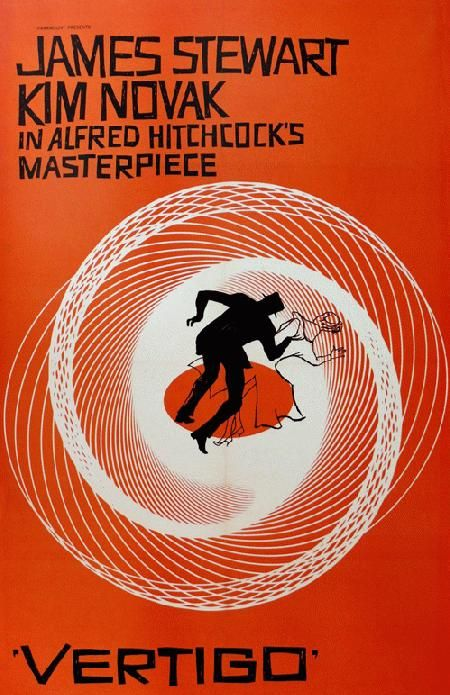
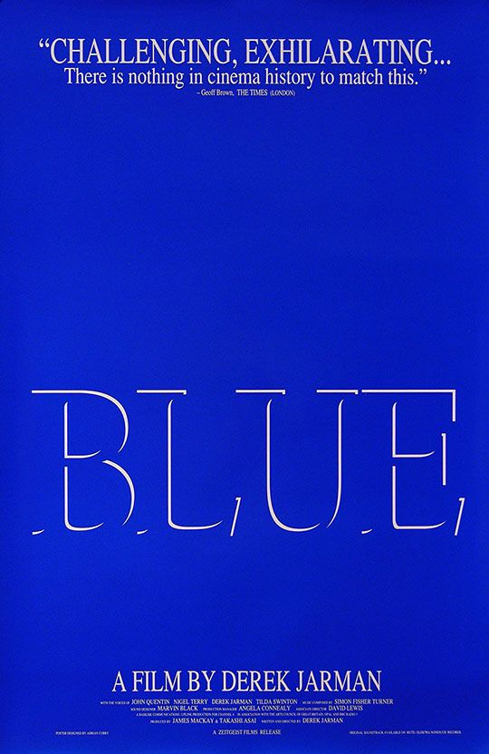
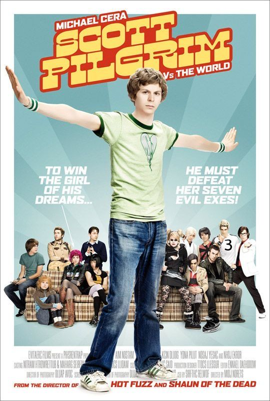
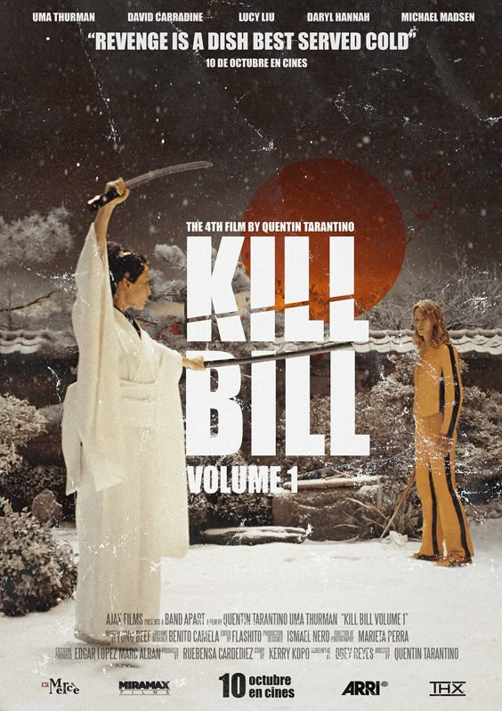
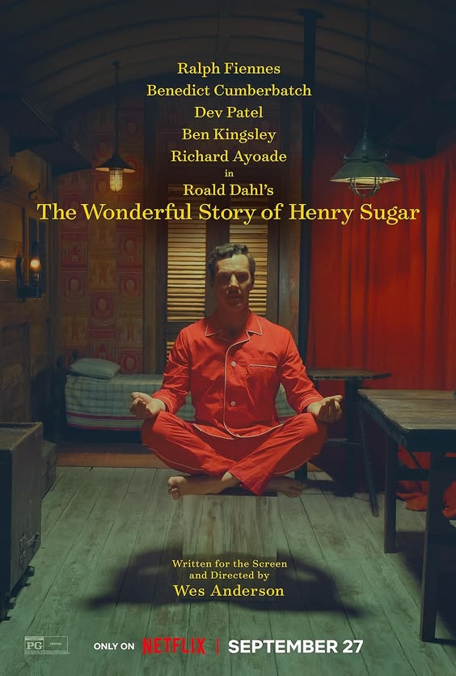
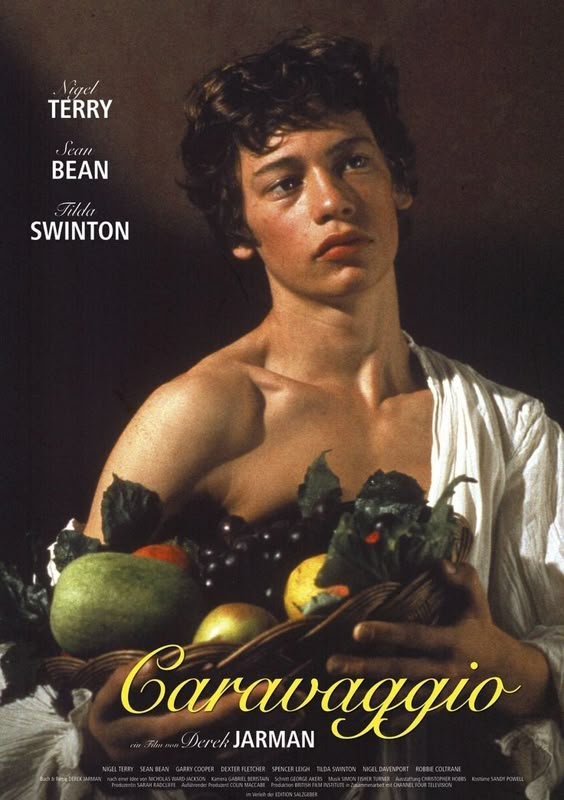
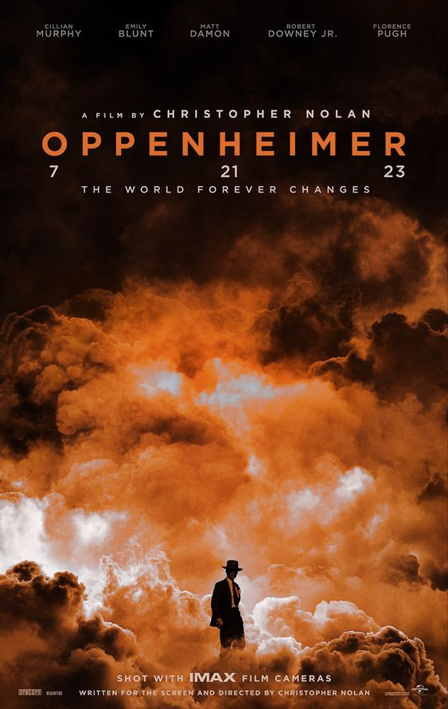
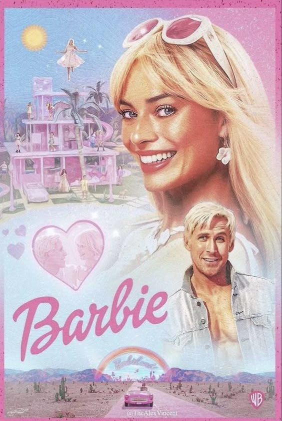

| film |
information |
review |
 |
The Fly
[David Cronenberg, 1986]
4.0/5.0 |
There is something about the inevitability of the body horror in The Fly that evokes a much deeper, visceral sense of disgust that clings inside you for a while. Incredible special effects that stand the test of time, they seem even more incredible knowing that it was all done without CGI. Despite the horror, the film still manages to be surprisingly poignant and paints a devastating story of essentially losing yourself and being able to do nothing but allow it to happen.
|
 |
Lolita
[Stanley Kubrick, 1962]
3.0/5.0 |
Second Kubrick film I've watched and again the overwhelming consensus is that I am utterly bored out of my mind. Somehow, he manages to make such a controversial but fairly interesting book insanely dull. This film comes nowhere near grasping the deeply unsettling nature of a book with a delusional unreliable narrator, instead covering it up with a seemingly lighthearted borefest of what Kubrick has tried to make a comedy.
Nabokov would have hated this adaptation, and would have hated the film poster too and how it almost inevitably began the sexualisation of the novel.
|
 |
Dr. Strangelove or: How I Learned to Stop Worrying and Love the Bomb
[Stanley Kubrick, 1964]
3.0/5.0 |
I feel like I was only able to shallowly appreciate this film, from a wary distance. I liked the imposing design of the war room, probably the most memorable part of the film. Also, I enjoyed the hints to McCarthyism and cold war paranoia and the like - It's cleverly directed, and I see the appeal of the satirical nature of the film. There were a few funny moments, but they felt forced and more like "Oh, that's clever and funny. Okay." moments, rather than a sense of genuine humour.
The lacking part was that I genuinely did not care. I could not bring myself to care or become interested in, even a little bit, about any of the characters, not to mention that they literally all looked the same to me. I didn't have fun, I didn't feel anything for the entire 90m of watching this film. I can't tell you the name of a single character except for the obvious eponymous Dr. Strangelove.
|
 |
Possession
[Andrzej Zulawski, 1981]
5.0/5.0 |
Where do i start? I'm truly in love with every part of this film, I thought it was hypnotically, uncomfortably, gorgeous. Isabelle Adjani's performance as Anna embodies rage, catharsis, hysteria, passion - everything, brilliantly, from the transcendence of the subway scene, to the cruel intensity of the ballet scene. There is a thin line between the viewer's choice to take this film with full seriousness, or to view things as metaphorical, in terms of the theatrical acting and more obviously, the physicality of the creature itself. Zulawski gives you clues, but there is clearly no, so to say, 'correct interpretation' of what has truly happened. However, unlike after watching other open ended films, Possession leaves me satisfied and at peace with its ambiguity.
God looms over possession, god is what they all desire. Heinrich calls Anna "the other half of god's face"; Mark aptly calls god a "disease", for his weakness lies in his relentless pursuit of Anna but also Anna's relentless pursuit of her very own god, rebirthed as the creature that you cannot help but draw your eyes towards. The creature itself is brilliantly designed, lovecraftian almost, completely unanticipated if you are unaware of its existence before watching.
Interestingly, Possession also reflects the political climate of Berlin at that time, shown in glimpses through the differences between the original claustrophobic, run down apartment to the well furnished, clean apartment at the end, but also through the polished idealisation of the doppelgangers.
|
 |
Vertigo
[Alfred Hitchcock, 1958]
4.5/5.0 |
Vertigo wasn't only cinematically impressive but it was also unexpectedly engaging and fun to watch. the way it built suspense reminded me a little of david lynch's work, crafting an unsettling but beautifully surreal atmosphere, complemented by a soundtrack that you can tell has been intricately crafted. this is combined with more indulgent, faster scenes to craft a perfectly paced watch. midge emerged to me as the most interesting and my favourite character in vertigo - she shines the most in the painting scene, and though fitting, i think she ultimately deserved a better ending.
i loved the use of green in this film, from the more subtle hints of green for madeline, to the harsher shade that engulfs judy, it reflects the clear change in scottie's obsession to something more dangerous, and the shift in power dynamic in the two relationships.
|
 |
Dune: Part Two
[Denis Villeneuve, 2024]
5.0/5.0 |
truly breathtaking cinematography and sound, fully deserving to be watched on a big screen. every single scene is beautifully clean and works as a piece of art by itself. personally i don't care much about fight choreography but the action scenes in general were so offputtingly beautiful. Villeneuve was absolutely correct when he said "I remember movies because of a strong image. I'm not interested in dialogue at all. Pure image and sound, that is the power of cinema.", and it shows so clearly in his work.
the scenes on Giedi Prime were some of my favourites, from the harsh grayscale to the brutalism and scale of the architecture; it's such a brilliantly unique representation of a futuristic foreign planet. the ink blot fireworks were such a good detail, they reminded me of the ink in Villeneuve's 2016 Arrival. loved feyd and his symmetrical bald head, austin butler really stole the show for me.
|
 |
Blue
[Derek Jarman, 1993]
4.0/5.0 |
i'm not sure if you can count this as a film, but i'm counting it as a film anyways. though it's not particularly enthralling, the visual part of this film is still important and powerful; i don't think Blue would have had the same effect if Jarman did indeed decide to include actual visuals. Blue forces you to feel and live through what he and millions of others experienced, it intimately humanises the victims of the aids epidemic in a way that numbers and statistics often fail to do.
|
 |
The Holdovers
[Alexander Payne, 2023]
4.5/5.0 |
this was heavily reminiscent of Dead Poets Society, especially in its warmth and whimsiness, but also plot wise. i really became attached and invested in all of the characters, even the ones who weren't part of the main plotline (really would have liked to see more about the students who left to go skiing).
overall, a very solid film and a fun watch. made me laugh. getting meditations by marcus aurelius for christmas would have been my breaking point.
|
 |
All Of Us Strangers
[Andrew Haigh, 2023]
4.5/5.0 |
devastatingly miserable. i initially watched this with the expectation of a typical romance plotline between two main characters, i had truly no idea that it would be a piercingly visceral capture of grief, that hit uncomfortably close to home in a litany of different ways. but despite the misery, the film is paradoxically beautiful with sultry visuals, constantly drawing you in then throwing you into the deep end.
when searching the film up, it comes up under the genre name "fantasy", but something about it being a ghost story doesn't feel fulfilling. the idea of it being a ghost story implies some sort of a continuation of life after "death", which to me ruins the uniquely devastating sense of loss that only comes from death. however, the film itself isn't quite as definitive as its wikipedia categorisation, and seems intentionally vague, leaving us to interpret the film in our own way. i like the idea of the scenes with his parents and harry being delusions, or hallucinations, fuelled by loneliness and a desperate longing of comfort as a result of his losses.
i think i enjoyed the ending; it wasn't something i was expecting but i think it ties off the film well, creating a fitting sense of closure, especially the final scene where they head out into the stars. a comparison can be made between feeling small and lonely in a big city, to a sudden comparison of how small we really are in the universe. we are specks in space, but that doesn't mean anything should ever matter less.
|
 |
The Beguiled
[Sofia Coppola, 2017]
4.0/5.0 |
unsurprisingly, the beguiled is another visually gorgeous film from sofia coppola with the dreamiest natural lighting and etheral costume design. it's a little slow and insufferable to watch at the beginning - though i see the appeal of their joint obsession over the corporal, this part felt dragged out and it simply wasn't something i liked watching. i'm not sure if sofia coppola intended for the watcher to sympathise with the women, or for us to observe in fascination from a careful distance.
however, it picks up about halfway through and redeems itself through an unexpected but certainly very satisfying ending. on reflection, the entire thing feels a little underwhelming, but still a very pleasurable watch. extra points for failing the reverse bechdel test.
|
 |
The French Dispatch
[Wes Anderson, 2021]
4.0/5.0 |
stylistically my favourite wes anderson film; i really liked his eclectic use of colour, from the french new wave style black and white visuals, to the animated, to his typical whimsical bright colors, and the varied use of aspect ratios. i also ... really liked the font that the french subtitles were written in.
i must admit timothee chalamet doesn't fit in this film. timothee chalamet looks like someone who owns an iphone and regularly visits an esthetician in new york city. he does a good job in the role, but lyna khoudri does even better, fitting her role spectacularly, filling her character with personality and life. i adored the scene where they ride off into the distance on a motorcyle after "stop bickering. go make love", which was visually reminiscent of the iconic motorcycle scene in fallen angels (1995).
i don't think this film is style over substance. the so called "style" is not soulless, it's almost part of the "substance". it has a similar level of substance comparable to wes anderson's other films - this time, it's a love letter to the new yorker and journalists, but i think it's almost a love letter to living and the quaint world in general (but arguably almost all of his films seem to be like a gentle love letter to the world). i thought the film was immersive and i developed attachments to characters and their personalities. it made me laugh, it made me yearn. algorithmically, i consider that enough for a film to tick the "substance" category. i guess the only wes anderson film that i feel like i've "admired" more than actually enjoyed was asteroid city, where i was acutely aware of the fact that i was sitting in a cinema watching a film throughout, but that was probably because i was too stupid to understand what was going on. it was also my first wes anderson film, so i probably wasn't expecting having to actually think when watching.
|
 |
funeral parade of roses
[Toshio Matsumoto, 1969]
5.0/5.0 |
this film feels unlike anything i've ever watched before; it simply just has everything in it, from beautifully eccentric visuals to a chaotic psychedelic structure that doesn't put you off watching the film but instead seems to trap you inside the alienating universe that's been created. it's kind of insane that this was made in the 60s, in east asia. the ending was so unexpected but also so so perfect.
|
 |
saltburn
[Emerald Fennell, 2023]
5.0/5.0 |
i adored this film. it was brilliantly indulgent, reminding me of the secret history when they stayed at francis' estate over the holidays.
i think giving this film a low rating with the single criticism that it doesn't make some sort of "political or cultural point" outside of greed and people wanting more is slightly ridiculous. i think it creates some interesting commentary on the split between the comfortable middle class and the upper class in the united kingdom, and the sheer difference between the two, despite both being perceived as "rich", where class mobility between the two is essentially impossible. it translates even better to the oxford context, where there are people who've worked and worked (enabled and promoted by their middle class upbringing where education has been preached to them) to get into the university, living amongst other people who went to £60k a year elite private schools from families where it's simply just "tradition" to attend oxbridge, no matter the course. oliver tries to portray himself as the poor working class, because this makes him seem interesting, as he becomes a minority again, he becomes special, an extreme on the scale. later on in the film, oliver wants something that is simply unattainable for him, simply because of the way he was born. perhaps this doesn't translate as well across to america because most wealthy american families tend to be "new money", whereas in britain wealth is often defined by inheriting and owning swathes of land and historical buildings.
my interpretation of oliver's attraction to felix is the idea that slowly, oliver wanted to very much be felix, in the way that he wanted to peel off oliver's skin and wear it. the so called "shock" scenes worked beautifully well in the contexts and built up a multifaceted oliver incredibly well.
|
 |
priscilla
[sofia coppola, 2023]
4.0/5.0 |
an unsettlingly beautiful portrayal of the relationship between priscilla and elvis. i loved the costume design and the soundtrack.
|
 |
the royal tenenbaums
[wes anderson, 2001]
5.0/5.0 |
"ive always wanted to be a tenenbaum" "me too"
my favourite soundtrack of all time; i got excited when elliott smith's 'needle in the hay' started playing and richie decided to cut his hair (but then he tried to kill himself, which i probably should have anticipated). another one of my favourite scenes was where richie meets margot at a bus station, to the sound of nico's 'these days'. the music and the lighting in the scene created a sense of true gentle love, numb happiness.
this film also manages to construct and cast attention upon multiple richly detailed storylines with different characters, all interweaving perfectly, all of which i managed to connect to and become invested in, whereas often in film and tv i end up developing a strong preference for one storyline, and not being invested or understanding the other characters very well.
|
 |
Scott Pilgrim vs. the World
[Edgar Wright, 2010]
2.5/5.0 |
one of the most annoying films ever made, ramona flowers could have been so much more, but instead was clumsily reduced to being scott pilgrim's Manic Pixie Dream Girl, along with the only other women in the film being important only in relation to Scott. knives' characterization was incredibly weird and off-putting, and had racist undertones, despite being another character that could have been so much more.
scott is incredibly unlikeable (not in a good way), a horrible person, and suitably gets played by the most punchable-looking actor Edgar Wright could have cast. at the end of the film, he doesn't seem to have changed; his awful behavior seems to have been validated and even rewarded simply by 'defeating the evil exes,' but he's still equally desperate, entitled, and egocentric as he was at the beginning.
the two stars go to wallace's character and kieran culkin's acting. he was one of the only funny and mildly likable characters in the film.
the style was certainly fun and unique, and it was great on a technical level, but it's just not something that i personally enjoyed at all. put plainly, i thought it was ugly and obnoxious, making the already irritating film even more so.
|
 |
kill bill: vol. 1
[quentin tarantino, 2003]
4.0/5.0 |
definitely quite an indulgent film, i think it's quite "cinema" heavy and plot light but i don't think that's a negative, especially in this case. beautiful cinematography with some really creative camera shots and use of colour, loved the split screen scene and the blue silhouette fight scene in particular, and also an equally beautiful soundtrack that i don't think gets talked about enough. filled with cathartic violence and gore which kept me ridiculously stressed the entire time but the cinematography and sheer beauty made it not boring; i didn't end up skipping over anything. lucy liu was gorgeous i love lucy liu, as much as i loved o-ren and the final scene in the snow, which was reminiscent of the edward scissorhands snow scene.
this film doesn't end particularly satisfyingly, and i'm not a fan of the fact that there's a second part, especially noting that it's longer than 2 hours. also not a fan of the feet scenes.
|
 |
The Wonderful Story of Henry Sugar
[wes anderson, 2023]
4.0/5.0 |
i didn't expect to enjoy this too much, but it ended up really exceeding my expectations. along with the other shorts, stylistically they were quintessential wes anderson but executed better than asteroid city, which had originally left me slightly dissappointed. when i was younger, i read a lot of roald dahl (i still have the big box set of all of his work) so i was particularly excited for this; i think wes anderson's style perfectly complemented roald dahl's storytelling and created a comfortable sense of nostalgia. the pacing was perfect, i loved the fast speed of dialogue and the blunt direct monologues. i need all films to be paced like this.
|
 |
Caravaggio
[Derek Jarman, 1986]
4.0/5.0 |
beautiful shots, almost every scene from this looks like it could be an actual caravaggio painting. i absolutely loved the anachronisms throughout the film, especially the digital calculators and the british accents in 16th century italy. the film is oddly playful and carefree, whilst managing to be equally poetic and yearning at the same time.
|
 |
oppenheimer
[christopher nolan, 2023]
5.0/5.0 |
my first 5 star film in a while; i thought this was a cinematic masterpiece, and was truly incredible from start to end despite being three hours long, throughout which there was a constant thick sense of tension and immersion. it was perfectly paced, especially by skipping around the timeline really well without making it confusing.
my favourite moment was the dead silence in a full cinema during the trinity explosion, i felt like i was there experiencing the actual thing and feeling everything the characters were going through. i loved the actual content of the film itself too, specifically the focus on cold war history and its relation with quantum physics; i loved getting excited every time a new scientist turned up. this is definitely a film i'll be able to and need to rewatch and pick up on more details each time.
|
 |
barbie
[Greta Gerwig, 2023]
3.0/5.0 |
great film for people who are just discovering that women deserve rights; otherwise it felt like an painful onslaught of corporate liberal feminism. arguably the film does creates some feminist talking points and was probably impactful in its reach of a very wide audience, especially to a younger audience who may be hearing these things for the first time - but nothing i heard in barbie was news to me. for a supposedly political piece, i don't feel like it makes any subversive or particularly intriguing points. for a satire that's supposed to poke fun at the patriarchy, the men in the film certainly seem to have been given a lot of attention over the women.
for a comedy, barbie was a little funny, sure, but trashy snl skit level funny, stock photo meme funny, scrolling through generic tiktoks for an hour funny.
i liked the set and costume design, but except for the shots in the trailer, it isn't something that i'd particularly highlight. the costumes were iconic but nothing incredible or particularly beautiful, the sets were done well and i liked the choice of making barbieland plasticky and unrealistic, but again, everything i liked was already shown in the trailer and the film gave nothing after that. i think the marketing of this film and media perceptions have influenced the way i initially perceived the film; before release the whole cutesy pink thing was fully played into, and it led to higher visual expectations of the film, leaving me disappointed after the viewing.
the sheer consumerism as a result of the film, with bright pink barbie themed products emerging from almost every global corporation was incredibly jarring in comparison to the supposedly anti consumerism messages the film was trying to convey. the barbie movie exists only as an advertisement, to sell more low quality goods, to boost mattel's sales. even mattel knows that greta gerwig can literally explicitly state this in the film and people will look past this to still buy and eat up their shit, feeding the massive corporations, keeping the cycle going.
despite everything, i can't say i actively dislike barbie - it's playful, campy, and lighthearted, and i really liked the soundtrack - probably the thing that held the film together the best and stuck with me the most.
|